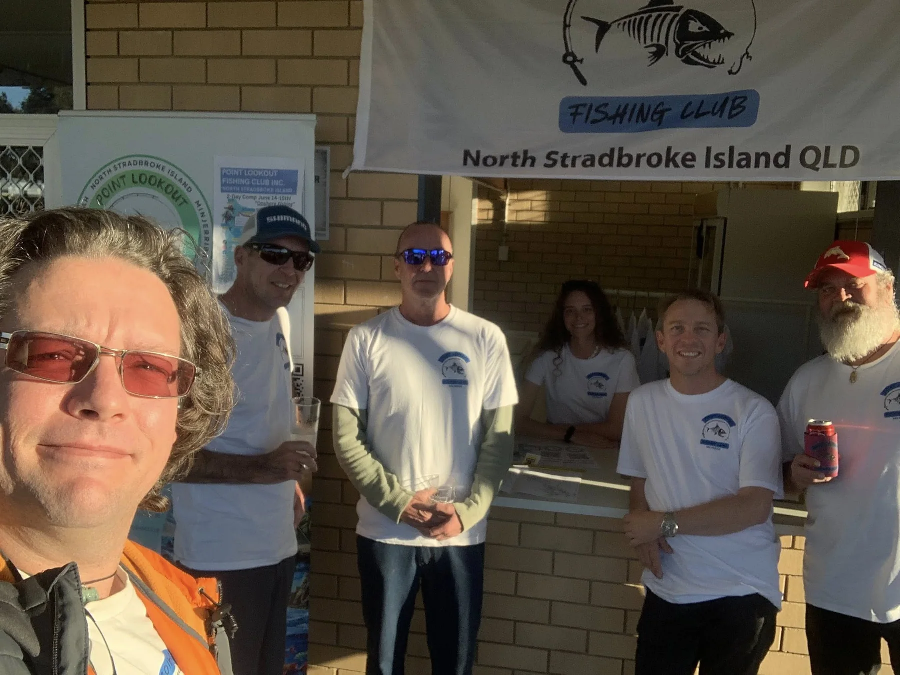
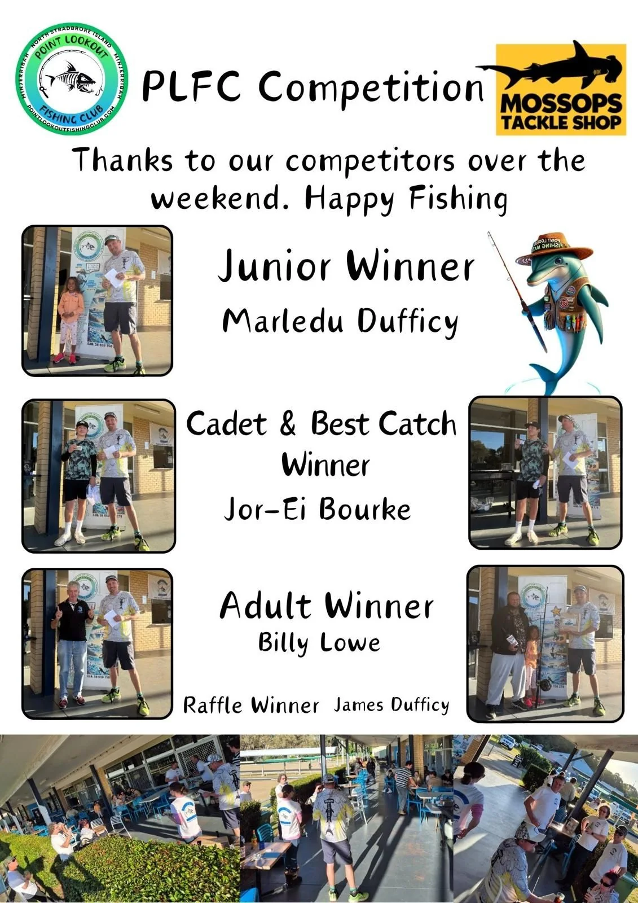

current shop products mapped

North Stradbroke Island / Minjerribah
Point Lookout Fishing Club
A working community-platform prototype for members, competitions, meetings, fundraising, grants and secretary-led operational clarity.
Secretary commission:
This exploratory open-source build turns AGM material, membership flows and meeting processes into a demonstrable interface for growing with the community.
Operating dashboard
A clearer front door, a stronger back office
The public site can stay warm and welcoming while the repo grows into a shared operational system: members, events, renewals, meeting records, grants, sponsors and data checks.
core process flows translated
website views drafted
AGM reset direction captured
Public doorway
Fishing, conservation, island community and events
The current WordPress site already carries a friendly welcome. This prototype keeps that heart and adds clearer pathways for membership, competitions, volunteer work, grants and sponsor support.
- Join the club or choose a casual comp pathway.
- See what the club does before filling in a form.
- Find meetings, working bees, newsletters and event notices.
Member journey
Registration, payment, profile, renewal and notices
The membership flow chart becomes a website journey: collect the right details once, take payment clearly, trigger the correct pack, and prepare renewals without manual chasing.
- Adult, cadet, junior, social and casual comp pathways.
- Email and SMS readiness for renewals, birthday offers and meeting notices.
- Preferences for newsletters, volunteering and working bees.
Committee rhythm
Agenda, recording, minutes, actions and next meeting
The meeting flow becomes a repeatable secretary system: prepare the agenda, remind people, record decisions, assign responsibility and carry actions into the next meeting.
- Agenda intake and previous minutes review.
- Quorum, reports, motions, decisions and action items.
- Shared calendar, task register and meeting pack path.
Stripe-ready commerce
Memberships, comp fees, fundraisers and merch
The first commerce layer is intentionally simple: prepare clear products and Payment Link placeholders now, then add Checkout Sessions when forms and member records are ready.
- Membership and casual competition products mapped from the current shop.
- Fundraising and merchandise pages ready for Stripe Prices.
- Renewals can grow into Billing subscriptions if the club wants automatic annual renewal.
Field ops and data
Solunar, tide, weather, team location and media capture
A future field layer can combine tide windows, weather monitors, opt-in team GPS and competition media uploads into a useful record for safety, storytelling and later local digital-twin mapping.
- Solunar and tide calendar as planning context, not navigation advice.
- Weather watch for wind, swell, warnings, storms, rain and sea conditions.
- Consent-based location sharing and media uploads for competition records.
Membership
Turn the member flow into a calm, trackable journey
Members should not need to understand the back-office machinery. They choose a pathway, pay, receive the right pack and get useful notices without being spammed.
Register
Name, contact details, date of birth, membership type and communication preferences.
Pay
Stripe Payment Link first, Checkout Session later when the member form becomes dynamic.
Activate
Member pack, newsletter preference, competition eligibility and working bee invitations.
Renew
Renewal email and SMS reminders, lapse window and number reallocation rules.
Commerce structure
Fee products are ready to become Stripe items
These are scaffolded as prototype products only. No live payment is connected in this repo.
Membership
Adult Annual Membership
$75 AUD
Full annual member pathway with meeting, voting and competition eligibility to confirm against club rules.
Competition
1-Comp Casual Membership
$25 AUD
A lightweight pathway for one competition, useful for visitors and try-before-joining moments.
Fundraiser
Junior Fishing Education Sponsor
TBC
A sponsor or donation product for junior education, workshops, safety gear and community outcomes.

Committee flow
Make every meeting feed the next one
The secretary process can become the site spine: agenda items come in, reports are recorded, decisions become action items, and the next meeting starts from clean context.
- Meeting preparation and reminders.
- Officer reports, motions, decisions and responsibilities.
- Minutes, action register and shared calendar readiness.
Field ops layer
Plan comps around conditions and capture better evidence
The next evolution can show tide windows, solunar periods, marine weather, event check-ins, consent-based team location and upload queues for photos, video and field notes.
- Weather and marine monitors with safety-first wording.
- Event-bound GPS sharing that expires after the comp.
- Media uploads tagged by event, time, location consent and use permission.
Forecast
Tide, solunar, wind, swell, storms, warnings and sea-surface context.
Coordinate
Team check-ins, opt-in location sharing and event communication windows.
Capture
Photos, video, notes, results and observations connected to the event record.
Model
Future local digital twins for maps, participation evidence and scenario planning.
Source material
Built from the club material already on the table
Current public site
Welcome copy, member promise, meeting place, social links, ABN and the existing WooCommerce shop shape.
AGM dashboard
Timeline, vision progress, reach, systems built, shortcomings, grant readiness and next-step readiness.
Uploaded process charts
Membership registration, payment, renewal, communications, committee meeting preparation and action flow.
Stripe plugin guidance
Payment Links first for simple products, Checkout Sessions for web app checkout, Billing only for approved recurring renewals.
Google Drive vault
Private Drive, Sheets and Gmail can feed approved public-safe exports without exposing raw member, payment or location data.
Next working session
From prototype to committee demonstration
The next useful pass is to replace placeholder copy with approved club wording, decide what can be public, and choose which Stripe items should go live first.